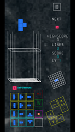
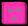

I. Polytesseract
4D 폴리테서렉트 테트리스. 7×7×7 (XYW) 바닥에 블록을 쌓고, 면을 채우면 점수를 얻습니다.
6개 회전 평면 (XY, YZ, XZ, XW, YW, ZW), W축 이동 지원.

√(줄)배 가산. 800점마다 Lv ↑
높이 초과 시 게임 종료.
II. 왜 해야 하나
- 시간을 때울 수 있다
- 공간지각능력 향상에 도움이 될 수 있을지도 모른다
터치하면 다음 →
III. 조작법

터치/마우스 버튼
◀ 회전 버튼 (12개)
좌측 3×4 격자 배치:
1행: XY·YZ·XZ 정회전 / 2행: XY·YZ·XZ 역회전
3행: XW·YW·ZW 정회전 / 4행: XW·YW·ZW 역회전
■ 회전모드 (빨간 버튼)
XYZ 모드 ↔ XYW 모드 전환. XYZ: 3D 공간 회전 (XY·YZ·XZ), XYW: W축 포함 회전 (XW·YW·ZW). 드래그 카메라 회전축도 함께 전환됨.
■ W깊이색 (초록 버튼)
W축 깊이에 따른 무지개 색상 표시 ON/OFF. 켜면 W=0(빨강)~W=6(보라)로 블록의 4차원 위치를 색으로 구분.
D-pad (방향패드)
8방향 원형 패드. 상(Y−)·하(Y+)·좌(X−)·우(X+): XY 이동.
우상(W+)·좌하(W−): W축 이동. 좌상·우하는 미사용.
■ 드롭
· ■ 홀드
드롭: 블록을 바닥까지 즉시 낙하. 홀드: 현재 블록을 보관하고 다음 블록 또는 보관된 블록과 교체.
드래그: 카메라 회전 | 핀치/휠: 줌
미니맵

우측 미니맵은 W=3 슬라이스의 Z ≥ floor 블록 상태를 위에서 내려다본 XY 평면도.
미니맵을 터치하면 floor = (floor+1) mod 7로 표시 층이 순환됨.
키보드
←→↑↓ XY | ,. W | Space 하드드롭 | R-Shift 소프트드롭 | Shift 홀드
ZX XY | CV YZ | RT XZ
AS XW | DF YW | GH ZW
터치하면 다음 →
IV. 일반 블록
Lv1: 모노10% 디20% 트리30% 테트라40%
 Mono
Mono Di
Di Tri-I
Tri-I Tri-L
Tri-L테트라 (7종)
 I
I L
L T
T O
O S
S Br
Br Sc
Sc펜타테서렉트 (26종)
 P0
P0 P1
P1 P2
P2 P3
P3 P4
P4 P5
P5 P6
P6 P7
P7 P8
P8 P9
P9 P10
P10 P11
P11 P12
P12 P13
P13 P14
P14 P15
P15 P16
P16 P17
P17 P18
P18 P19
P19 P20
P20 P21
P21 P22
P22 P23
P23 P24
P24 P25
P25P23-P25: 4D 고유 형태 (3D에서 불가능한 블록)
헥사+ & 랜덤
 I6
I6 2³
2³ 3²
3² I7
I7 2⁴
2⁴ R6
R6 R7
R7 R8
R8 R9
R9 R10
R10 R11
R11 R12
R12 R13
R13 R14
R14터치하면 다음 →
V. 특수 블록 — 유리 / 불리
유리한 아이템
 전체삭제
전체삭제판 위의 모든 블록 제거
확률 0.002%
 횡렬삭제
횡렬삭제Y좌표 ±1 열 삭제
확률 0.02%
 상단삭제
상단삭제위의 블록 모두 제거
확률 0.01%
 범위삭제
범위삭제주변 3×3×3 열 전체 삭제
확률 0.03%
 종렬삭제
종렬삭제X좌표 ±1 열 삭제
확률 0.02%
 W열삭제
W열삭제W좌표 ±1 열 삭제
확률 0.02%
 3-
3-바닥에서 3줄 제거
확률 0.005%
 2-
2-바닥에서 2줄 제거
확률 0.01%
 득점강화
득점강화점수 4배 (중첩 16배)
확률 ~1%
 모노전용
모노전용10턴간 모노테서렉트만
확률 0.08%
 관통
관통낙하 궤적의 블록을 파괴
모노 10% · 소형화 시 2-3칸
 상쇄
상쇄블록과 닿으면 상호 삭제
모노 40% · 소형화 시 2-3칸
 자폭
자폭착지 즉시 주변 3×3×3×3 파괴
모노 10% · 소형화 시 2-3칸
 빈공간삭제
빈공간삭제모든 빈공간 정리 (가산점 없음)
확률 0.02%
 소형화
소형화8턴간 ≤3 블록만
확률 0.08%
 속도감소
속도감소10턴간 낙하속도 x0.4
확률 0.1%
불리한 아이템
 2+
2+바닥에 2줄 추가
확률 0.03%
 1+
1+바닥에 1줄 추가
확률 0.08%
 장애물
장애물랜덤 위치 장애물 3개
확률 0.02%
 회전봉인
회전봉인10턴간 회전 불가
확률 0.025%
 속도증가
속도증가10턴간 낙하속도 x2.5
확률 0.1%
 홀드봉인
홀드봉인10턴간 홀드 불가
확률 0.025%
 시야봉인
시야봉인10초간 게임판 숨김
확률 0.025%
 폭탄블록5개
폭탄블록5개다음 5블록에 폭탄 포함
확률 0.01%
 대형화
대형화8턴간 ≥5 블록만
확률 0.08%
 은폐
은폐10턴간 낙하 블록 숨김
확률 0.025%
 예측차단
예측차단10턴간 다음 블록 숨김
확률 0.025%
 시한폭탄
시한폭탄설치 후 대기 상태
확률 ~0.5%
 시한폭탄
시한폭탄1턴 경과
 시한폭탄
시한폭탄2턴 경과
 시한폭탄
시한폭탄3턴 후 3×3×3×3 블록 무작위화
 아이템제거
아이템제거판 위 아이템 전부 제거
확률 0.1%
 폭탄변환
폭탄변환모든 블록 각 30% 확률로 폭탄 변환
확률 0.03%
 거울상
거울상보드를 좌우반전
확률 0.03%
각 층 블록 위치 무작위 재배치
확률 0.03%

구멍모든 블록 30% 확률로 제거
확률 0.03%
터치하면 다음 →